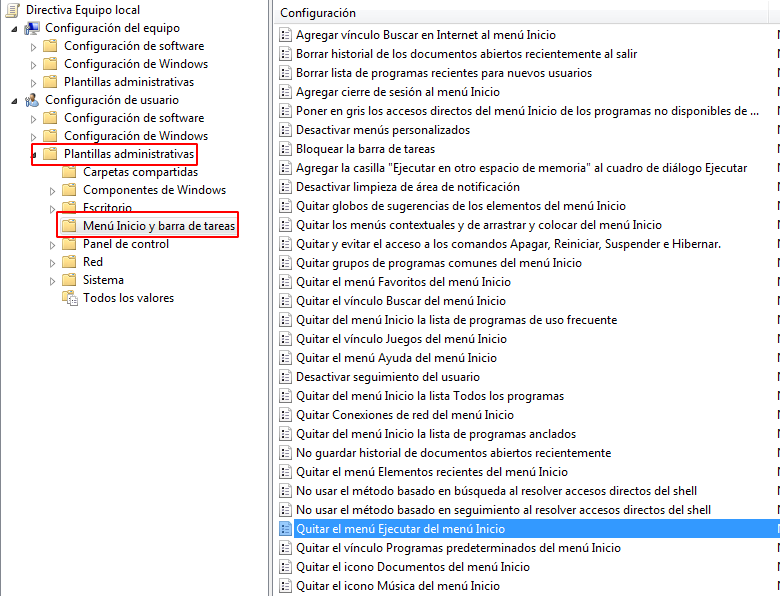
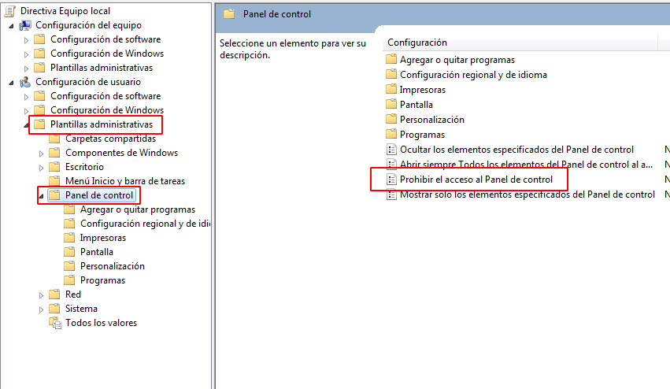
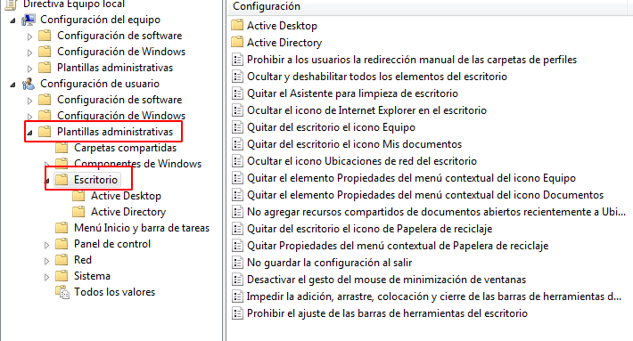
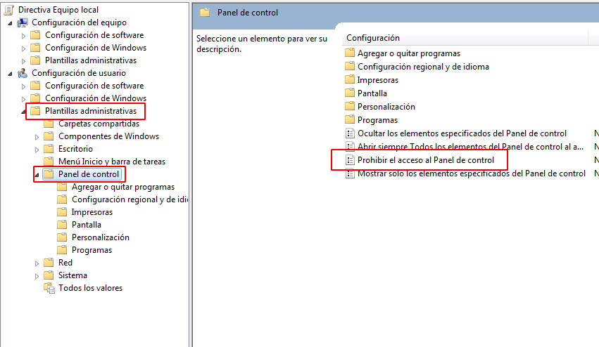
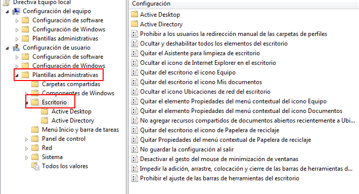

Politicas locales
Podremos entender las directivas del sistema como un mecanismo mediante el cual múltiples parámetros del entorno de trabajo son configurados por el administrador del sistema, de modo que todos los usuarios deberán asumir dichas configuraciones con independencia de sus preferencias.
Podemos acceder al panel de politicas de grupo desde windows ejecutando: gpedit.msc
Existen miles de directivas de grupo que pueden ser configuradas, y cada una de ellas permitirá configurar algún parámetro del entorno de trabajo del equipo y de sus usuarios. A continuación se muestran algunas que pueden ser utiles para establecer la configuración de los usuarios.
 


